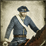
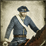

Enables
- Buildings:

- Units:
 


Spawned Garrisons
- Units:
Basic Building Statistics (can be modified by difficulty level, arts, skills, traits and retainers)
- Cost: 1600
- Recruitment capacity (units in training): +1
- -1 to happiness from modernisation
Clan Effects
- +1 to modernisation (clan development)
Description
There is much to learn before battle.
A cadet school allows the recruitment of modern units in a province. Training to be an officer takes a long time, and the best officers, the most dedicated professionals, are those who are trained from an early age to consider the army's interests before their own. As part of the efforts to modernise and professionalise armed forces, it was recognised in most countries that it made sense to teach young men the rudiments of military wisdom. As new guns and rifles arrived on the battlefield this became even more of an issue. In many countries officers had been trained by a sort of apprentice system, joining regiments directly as ensigns, cornets or junior lieutenants. While this was undoubtedly good for fostering strong bonds with their new units, it also meant that young officers also learned all the bad habits and prejudices of their senior colleagues. Only the seriously technical branches such as artillery and engineers avoided such problems by requiring officers to be educated.